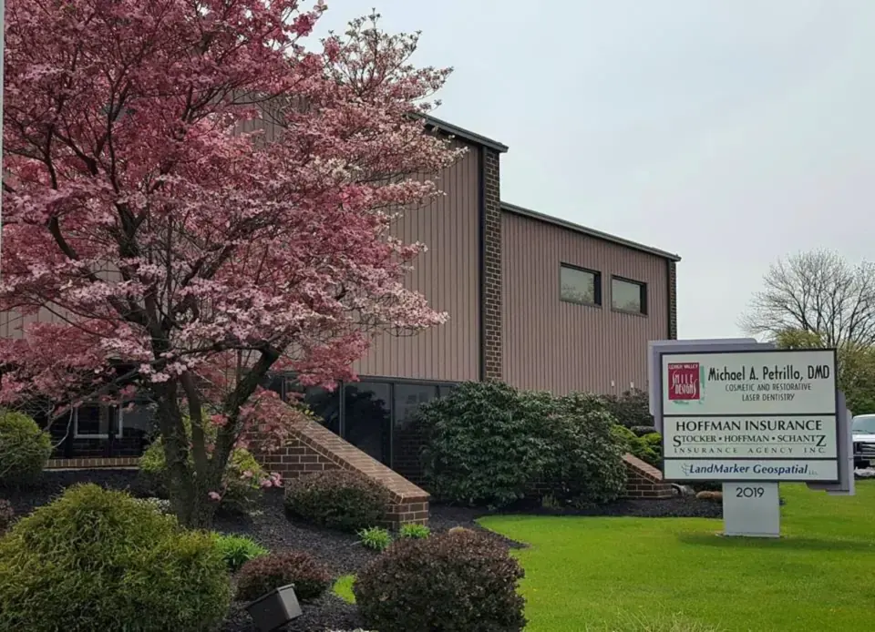

Invisalign clear aligners
in Bethlehem, PA
We offer Invisalign in Bethlehem, using iTero digital scans to plan your treatment.
Take them out to eat and brush. Wear them as your dentist directs.

Your Invisalign consultation
Request a consultation
Online or by phone.
Tell us about your teeth
Mention crowding, gaps, bite concerns or previous orthodontic care.
Discuss your options
The dentist checks whether aligners suit your teeth and bite.

Dr. Bernhard E. Kabitzke, DMD
Dr. Bernhard E. Kabitzke has certification in Invisalign treatment and training in occlusion, the way your teeth meet when you bite.
We're a general dental practice. At your consultation, we can discuss your care options and which provider is appropriate for your needs.
Meet our dentistsHow Invisalign works
Invisalign uses a series of custom clear plastic trays that fit over your teeth. Your dentist plans the movements and checks your progress as each set gradually moves your teeth.
The trays are less noticeable than metal brackets and wires. They come out for meals and cleaning, but treatment still needs consistent wear and checkups.
Is Invisalign right for you?
Invisalign may help with crowding, gaps, small tooth movements and some bite concerns, including overbites, underbites and crossbites. An assessment is needed to judge whether aligners can make the changes you need.
Compare clear aligners and braces
| Consideration | Invisalign clear aligners | Fixed braces |
|---|---|---|
| Appearance and removal | Clear trays are removable and discreet, although they may be noticeable. | Brackets stay attached to the teeth during treatment. |
| Meals and cleaning | Remove trays for meals and oral care, then reinsert as directed. | Clean around brackets and follow advice about food choices. |
| Daily commitment | Movement depends on wearing the aligners as prescribed. | Braces stay in place; cleaning and any additional instructions still matter. |
| Adjustments and reviews | No wires to adjust; change trays and attend reviews on your dentist's schedule. | The treating clinician adjusts and monitors the fixed appliance. |
| Which fits your case? | An assessment considers the movements needed and your ability to wear trays. | May be more appropriate for some treatment needs. |
Adults and teenagers both need an assessment. The dentist considers oral health, bite, development and goals, along with your ability to wear the trays. Complex concerns may need a different approach. Neither aligners nor braces are always faster, cheaper or better.
If your teeth have shifted since you had braces, tell the dentist about your treatment and retainer use. They'll check whether aligners or another option could help.
If you want to change more than tooth position, see our cosmetic dentistry options or how a smile makeover can bring several treatments together.
What patients said about Invisalign
In addition, the whole team was fabulous with helping me get all setup to start my Invisalign journey!
· Google review
The group also did well with my invisalign work.
· Google review
Your Invisalign treatment steps
Your consultation
At your consultation, we review your alignment goals, oral health and bite before discussing suitable treatment options.
Tell us what you'd like to change. The dentist can explain which records are needed, other options, expected fees and what comes next before you decide.
Tell us about:
- Previous braces, aligners or retainers
- Your insurance information, if applicable
- Other dental work you're considering
See our new-patient information before your visit.
Planning your aligners
The dentist reviews the proposed tooth movements. A scan doesn't mean you're starting aligner wear: scanning, reviewing the plan and receiving your trays are separate steps. What happens next, and when, depends on your plan.
Wearing your aligners
Each set makes planned changes to tooth position, which can include turning teeth or moving them sideways or vertically. Your dentist tells you how long to wear each set, when to change it and when to return.
Aligner changes are often around two weeks and checkups around six weeks, though your instructions may differ. At these visits, the dentist checks movement and fit and helps manage your next trays.
How long will treatment take? It depends on the movements needed, how your teeth respond and consistent wear. The dentist can estimate it after assessment; checkups and extra aligners may change the timing.
After treatment
After active treatment, discuss retainer wear, follow-up and replacement costs with the dentist.
Attachments and extra aligners
Will I need attachments?
Attachments are small tooth-colored shapes bonded to selected teeth. They help the aligners apply the planned forces. Whether you need them, where they go and how noticeable they are depend on your plan.
Read about Invisalign attachmentsWhat if I need more aligners?
Extra aligners, called refinements, may be needed for further adjustments. The dentist checks your progress before discussing what comes next. Check your written estimate to see whether they're included or cost extra.
How much does Invisalign cost?
Costs depend on the movements needed and your treatment plan. Review a written estimate before you decide.
Check what's included
- Are the examination, photos and any scans or other records included?
- Which aligners and checkups are included?
- Are extra aligners charged separately?
- Are retainers, replacements and later follow-up included or extra?
Questions about your treatment
When might I notice a change?
Some people notice changes within a few weeks. That doesn't mean treatment is finished. Your plan and how your teeth respond determine the timing; ask the dentist what to expect in your case.
Can teenagers wear Invisalign?
It may be an option. The dentist considers oral health, bite, development and whether the teenager can wear the trays consistently.
Will they hurt or affect my speech?
You may feel pressure or temporary discomfort with a new set, and your speech may change at first. Everyone's experience is different. If discomfort continues or the fit worries you, contact the office rather than adjusting the trays yourself.
How many hours should I wear my aligners?
Invisalign's general guidance is 20–22 hours a day. Follow your dentist's instructions for wear, removal and changing sets. This isn't nighttime-only treatment. If you miss prescribed wear time, contact our office for individual advice.
What if I lose or damage a tray?
Contact our office for individual advice. Keep your case and any remaining aligners. Don't move to a previous or next tray without instructions.
Will I need retainers, and are they included?
Aligners move teeth; retainers help hold them in place and limit shifting afterward. Discuss the type, wear schedule, follow-up and replacement costs with the dentist. Check whether they're included in your written estimate. If you need a replacement retainer, contact our office to discuss it.
Visit our Bethlehem office
Office hours
Eastern Time
- Monday
- 9:00 AM - 7:00 PM
- Tuesday
- 8:00 AM - 5:00 PM
- Wednesday
- 8:30 AM - 7:00 PM
- Thursday
- 7:00 AM - 5:00 PM
- Friday
- 9:30 AM - 2:00 PM
- SaturdayFirst and third Saturdays of the month
- 8:30 AM - 12:30 PM
- Sunday
- CLOSED
For parking or accessibility questions, call our team.
Map not loading? Use Get directions beside the address.
Directions to our Bethlehem office
Talk to our dental team
Request an Invisalign consultation at our Bethlehem office, or call (610) 868-7601.
Have a question first? Contact our team.